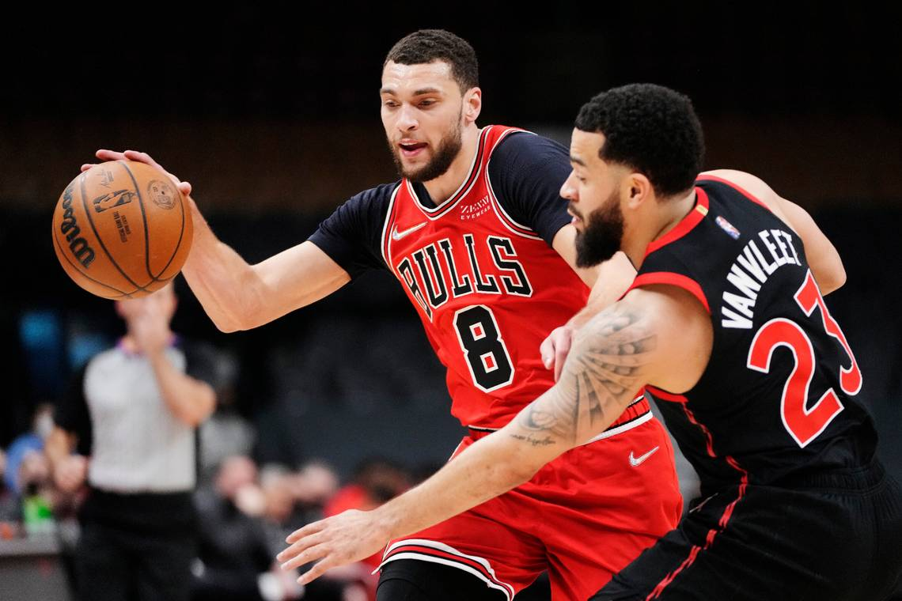

NBA NEWS
Giannis scores 44, leads Bucks' 131-116 win over Lakers
By AP Feb 9, 2022 at 10:15 am ET 4 min read

LOS ANGELES (AP) Giannis Antetokounmpo scored 44 points on 17-for-20 shooting, and Bobby Portis had 23 points with five 3-pointers in the Milwaukee Bucks' 131-116 victory over the Los Angeles Lakers on Tuesday night.
Khris Middleton scored all of his 21 points in the first half as the defending NBA champions won their fourth straight overall and swept back-to-back games against LA's two teams.
Antetokounmpo was largely unguardable in the two-time MVP's highest-scoring performance since Nov. 17, getting 14 rebounds and eight assists while making his first 11 shots.
''He made it look easy, honestly,'' Middleton said. ''That just shows the level of how he's playing. He was knocking down his jump shot. He's got guys going for his pump fake. Just the way he let the game come to him and stay patient, it was pretty fun to watch.''
Milwaukee jumped to a 24-point lead in the first half with 70% shooting and led by 30 midway through the third quarter before surviving the Lakers' strong late rally. The Bucks hung on for their third win on a four-game West Coast road trip that ends with an NBA Finals rematch in Phoenix on Thursday.
''Obviously when you make shots, the game is a lot easier, looks a lot better,'' Antetokounmpo said. ''I know I'm going to try to get my teammates involved and look for the best way to help the team, but sometimes when you start making shots, you feel better about yourself, you defend better. Today was one of those games.''

Suns hold off 76ers 114-109 for NBA-best 44th victory
PHILADELPHIA -- — Devin Booker never tires of watching Chris Paul do his thing to lift Phoenix to big wins.
13 hours ago

Nets overcome slow start, pull away from Celtics in opener
Durant had 32 points and 12 rebounds, Irving scored 29 points and the Nets recovered from their superstars' frigid start to beat the Celtics 104-93 on Saturday night.
23 hours ago
Siakam scores 25 points as Raptors beat Bulls 127-120 in OT
Scottie Barnes scored 21 points, including the go-ahead basket with 1:44 left in OT, and Gary Trent Jr. added a decisive 3-pointer with 16 seconds remaining.